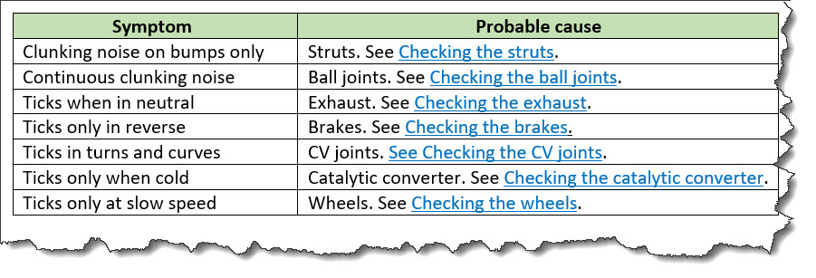

<diagnostics-general>
The
<diagnostics-general> element includes non-procedural information that can help
determine the causes of a symptom. Results of the diagnoses might link to possible solutions.
Usage information
This element is useful for presenting non-procedural diagnostic information, for example, a diagnostic table or a flowchart. Non-procedural diagnostic information can be used when the symptoms can be observed and do not require people to take action.
Specialization hierarchy
The <diagnostics-general> element is
specialized from <section>. It is defined in
the troubleshooting module.
Attributes
The following attributes are available on this element: universal attributes.
Example
This section contains examples of how the
<diagnostics-general> element can be used.
Implementations might well have different business rules for how to
document troubleshooting.
The following code sample shows how the
<diagnostics-general> element can
contain a table to help a reader determine the
cause of a problem. The table then references the associated
remedy.
<troubleshooting id="car-makes-funny-noises">
<title>Car is making funny noises.</title>
<shortdesc>You probably know how your vehicle sounds when it’s running
properly. Listening to your car can help you troubleshoot problems. If
you hear a strange sound, pay attention and react
accordingly.</shortdesc>
<troublebody>
<diagnostics>
<diagnostics-general>
<simpletable frame="all" relcolwidth="1* 1*">
<sthead>
<stentry>Symptom</stentry>
<stentry>Probable cause</stentry>
</sthead>
<strow>
<stentry>Clunking noise on bumps only</stentry>
<stentry>Struts. See <xref href="#./checkstruts"/>.</stentry>
</strow>
<strow>
<stentry>Continuous clunking noise</stentry>
<stentry>Ball joints. See <xref href="#./checkballjoints"/>.</stentry>
</strow>
<strow>
<stentry>Ticks when in neutral</stentry>
<stentry>Exhaust. See <xref href="#./checkexhaust"/>.</stentry>
</strow>
<strow>
<stentry>Ticks only in reverse</stentry>
<stentry>Brakes. See <xref href="#./checkbrakes"/>.</stentry>
</strow>
<strow>
<stentry>Ticks in turns and curves</stentry>
<stentry>CV joint. See <xref href="#./checkcvjoint"/>.</stentry>
</strow>
<strow>
<stentry>Ticks only when cold</stentry>
<stentry>Catalytic converter. See <xref href="#./checkcatalyticconverter"/>.
</stentry>
</strow>
<strow>
<stentry>Ticks only at slow speed</stentry>
<stentry>Wheels. See <xref href="#./checkwheels"/>.</stentry>
</strow>
</simpletable>
</diagnostics-general>
</diagnostics>
<!-- The rest of this topic contains <troublesolution> elements, each of which
contains a remedy. The cross references in the above steps resolve to the
<remedy> elements. -->
</troublebody>
</troubleshooting>The table in the <diagnostics-general>
element might be rendered in the following way. The hyperlinks in
the "Probable cause" column resolve to the
<remedy> elements in the topic.
